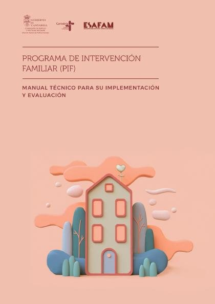
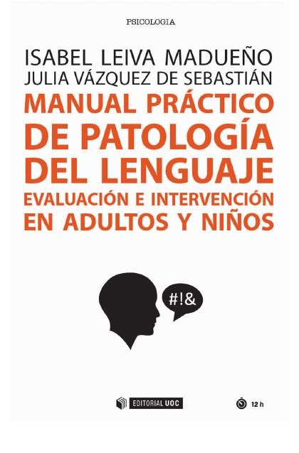
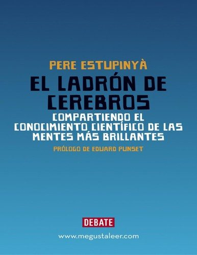

Libros de investigación, medición y ciencia psicológica
Libros de investigación, medición y ciencia psicológica en español: 22 libros completos para leer gratis aquí mismo y 1 ficha de títulos actuales.
Estadística aplicada a la psicologíaRevisiones sistemáticasEvaluación de intervencionesCiencia abiertaPsicometríaConstrucción de testsFiabilidad de las pruebasValidez de constructoValidez predictivaMetodología de investigación psicológicaÉtica en investigación psicológicaDiseño experimentalInvestigación correlacionalEstudios longitudinalesEstudios transversalesSesgos de investigación
Estadística Inferencial para Psicología: Problemas resueltos y ejercicios de prácticaMartínez Nicolás, Israel
Estadística Inferencial para Psicología: Problemas resueltos y ejercicios de prácticaMartínez Nicolás, IsraelRevisión sistemática de la prevención del ciberbullying en Educación PrimariaMartínez Navarro, Raquel; Romero Tena, Rosalía
Revisión sistemática de la prevención del ciberbullying en Educación PrimariaMartínez Navarro, Raquel; Romero Tena, RosalíaEvaluación en demencias: recurso general para alumnos Máster Intervención personas con alzheimer. Material docente [Recurso Educativo]Buch Vicente, Bárbara
Evaluación en demencias: recurso general para alumnos Máster Intervención personas con alzheimer. Material docente [Recurso Educativo]Buch Vicente, BárbaraPrograma de Intervención Familiar (PIF): Manual técnico para su implementación y evaluaciónHidalgo García, María Victoria; Jiménez García, Lucía; Pérez Padilla, Javier; Herrera Collado, Ester
Programa de Intervención Familiar (PIF): Manual técnico para su implementación y evaluaciónHidalgo García, María Victoria; Jiménez García, Lucía; Pérez Padilla, Javier; Herrera Collado, Ester
Prácticas de PS1034: Evaluación e Intervención ClínicaQuero, Soledad; Díaz-García, Amanda; López-Montoyo, Alba; Bretón-López, Juana; Serrano-Zárate, Berenice; Díaz-García, Amanda; Botella, Cristina
Prácticas de PS1034: Evaluación e Intervención ClínicaQuero, Soledad; Díaz-García, Amanda; López-Montoyo, Alba; Bretón-López, Juana; Serrano-Zárate, Berenice; Díaz-García, Amanda; Botella, CristinaAnálisis estadístico con JASP: una guía para estudiantesMark A. Goss-Sampson (trad. y adapt. Julio Meneses y otros)
Análisis estadístico con JASP: una guía para estudiantesMark A. Goss-Sampson (trad. y adapt. Julio Meneses y otros)Evaluación en psicología clínica de adultosJoan Deus, Josep Deví Bastida, Susanna Jofre y otros
Evaluación en psicología clínica de adultosJoan Deus, Josep Deví Bastida, Susanna Jofre y otrosOrganizaciones emocionalmente inteligentes : experiencias en evaluación e intervenciónBRESO, EDGAR; Sanchez-Gomez, Martin
Organizaciones emocionalmente inteligentes : experiencias en evaluación e intervenciónBRESO, EDGAR; Sanchez-Gomez, MartinManual práctico de patología del lenguaje. Evaluación e intervención en adultos y niñosLeiva Madueño, Isabel; Vázquez De Sebastián, Julia
Manual práctico de patología del lenguaje. Evaluación e intervención en adultos y niñosLeiva Madueño, Isabel; Vázquez De Sebastián, Julia
Construcción de pruebas estandarizadas en el ámbito de la medición educativa y psicológicaBrizuela Rodríguez, Armel; Villarreal Galera, María Paula; Alfaro Rojas, Lucrecia
Construcción de pruebas estandarizadas en el ámbito de la medición educativa y psicológicaBrizuela Rodríguez, Armel; Villarreal Galera, María Paula; Alfaro Rojas, LucreciaPsicometríaAlbert Bonillo Martín, Antoni Cosculluela Mas, Jaume Turbany Oset y otros
PsicometríaAlbert Bonillo Martín, Antoni Cosculluela Mas, Jaume Turbany Oset y otrosPsicometría (ESP)Albert Bonillo Martín; Cosculluela Mas, Antoni; Jaume, Turbany Oset; Meneses, Julio; Lozano Fernández, Luis Manuel; Barrios, Maite; Valero Ventura, Sergi
Psicometría (ESP)Albert Bonillo Martín; Cosculluela Mas, Antoni; Jaume, Turbany Oset; Meneses, Julio; Lozano Fernández, Luis Manuel; Barrios, Maite; Valero Ventura, SergiHabilidades sociales: educar hacia la autorregulación: conceptualización, evaluación e intervenciónPaula Pérez, Isabel, 1970-
Habilidades sociales: educar hacia la autorregulación: conceptualización, evaluación e intervenciónPaula Pérez, Isabel, 1970-Reglas y consejos sobre investigación científica (Los tónicos de la voluntad)Santiago Ramón y Cajal
Reglas y consejos sobre investigación científica (Los tónicos de la voluntad)Santiago Ramón y CajalEstudio teorico-practico del tratamiento moral de la locura : tésis para el exámen profesional de medicina y cirujíaAlvarez, José M., active 1880, author
Estudio teorico-practico del tratamiento moral de la locura : tésis para el exámen profesional de medicina y cirujíaAlvarez, José M., active 1880, authorMedicina fantastica del espiritu, y espejo theorico-practico, en que se miran las enfermedades reynantes desde la niñéz, hasta la decrepitud: con recetas y aforismos, que suministra la moral, escrita en metro joco-serio y prosaDamian de Cosme
Medicina fantastica del espiritu, y espejo theorico-practico, en que se miran las enfermedades reynantes desde la niñéz, hasta la decrepitud: con recetas y aforismos, que suministra la moral, escrita en metro joco-serio y prosaDamian de CosmePsicometría, febrero 2023Angulo-Brunet, Ariadna
Psicometría, febrero 2023Angulo-Brunet, AriadnaMetodología de la investigación: de lector a divulgadorRomán, Pablo; Rodriguez-Arrastia, Miguel; Ropero-Padilla, Carmen
Metodología de la investigación: de lector a divulgadorRomán, Pablo; Rodriguez-Arrastia, Miguel; Ropero-Padilla, CarmenÉtica del psicólogoAndrés Chamarro, Lidia Albert Gayà, Eva Juan Linares
Ética del psicólogoAndrés Chamarro, Lidia Albert Gayà, Eva Juan LinaresMetodología de la investigación para estudiantes de psicología. Manual de entrenamiento y prácticaOlaz, Fabián; Medrano, Leonardo
Metodología de la investigación para estudiantes de psicología. Manual de entrenamiento y prácticaOlaz, Fabián; Medrano, LeonardoIntroducción a la psicología científicaMarc Guasch Moix
Introducción a la psicología científicaMarc Guasch MoixMetodologías científicas en PsicologíaIgnacio Montero García-Celay, Orfelio Gerardo León García
Metodologías científicas en PsicologíaIgnacio Montero García-Celay, Orfelio Gerardo León GarcíaEl ladrón de cerebrosPere Estupinyà
El ladrón de cerebrosPere Estupinyà
Temas relacionados
¿Estás eligiendo carrera?
Haz gratis el test de orientación vocacional de AURZANE: intereses, aptitudes, autoconcepto y hábitos de estudio, con informe completo.